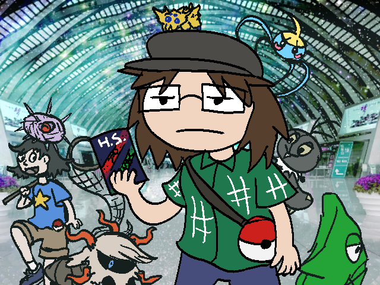

Dealing with pokemon
In the summer of 2021, pokemon became an essential part of Starter Planet's biosphere. When it comes to handling pokemon, their original written material can determine a lot. When possible, things may be glazed over and/or simplified to a degree. This document has guidelines on this.
It is assumed that the reader is familiar with pokemon and pokemon battling to a degree.
Basic Stats
Generally, if a pokemon will participate in battle, each pokemon should have a level, a set of four moves available for combat, and a nature. Other stats are ultimately optional, but may come into play if a pokemon is imported from elsewhere. Nature is used to guide behavior, favorite flavors, and stat inclinations. Abilities can also be put into effect. Do note, in most cases a pokemon will not have a hidden ability unless special circumstances, defaulting to a common ability instead.
Generally, any list of "moves learnt by level up" can be used, as long as a particular pokemon sticks to using the one they started with, or the one from the most recent game they were imported from.
Battle handling
When it comes to pokemon battles, this can be handled in a variety of ways. It can be handled in the same manner as standard combat, but it can also be handled in more material-adherent methods if desired. Overall, both opponents must agree upon the combat handling method however.
The method of choice for game-complient battles is by utilizing pokemon showdown, though this may prove to be difficult if the opponents are from games which never had each other in the roster, as it is somewhat confusing to navigate the menus to make a team that can work with any pokemon. Also, pokemon that have never appeared in any official game (or custom formes) may be much harder to define in a way that would work in this system. It is also possible to just use whichever connectible pokemon games both opponents have, but this of course costs money in official cases. Pokemon essentials is fair game and can handle customly defined pokemon (assuming the netplay is working), but may take more time than desired to get handled for both sides, so it hasn't really been used as a solution.
Type advantages operate as expected, please consult external guides for further information.
It is possible to fight a pokemon with a non-pokemon character, but it is largely frowned upon. It is very possible for non-pokemon to perform lethal blows on pokemon and this is also heavily frowned upon. Pokemon in general do not perform lethal blows on other pokemon. For non-pokemon-turned-pokemon, this instinct can be mitigated to a degree but don't count on it (likely will need to roll for override).
As a rule, pokemon are not evil. They may do things for those that are seen as evil, but it is often out of loyalty, not malice. While wild pokemon may try to fight a character, it is more often than not out of protection and fear rather than any sort of ulterior motive. They are bast treated with the same amount of respect you would give a wild animal (which I would hope would be relatively high).
Pokemon are said to enjoy combat with other pokemon. This is likely in part thanks to the in-grown expectation of only fighting to point of running away or absconding. When it comes to feeding/food chain stuff (like bird pokemon going after bug types for a meal), this sort of activity is largely only observed by wild pokemon, and is considered separate from battling.
Pokemon Capture
For catching pokemon, this can be done with or without battling. When offering food, matching food flavors to natures can increase chances of gaining a pokemon's trust.It is generally considered poor form to clobber a wild pokemon with a fainting move. Unlike in the games, you might be able to convince your pokemon to go easy on your opponent for the sake of capture, but don't count on it. you may need to roll for that.
In most cases, you will need a pokeball to catch a pokemon, but there are potentially other methods of capture available.
Obedience
For a pokemon to obey a character, it is expected for an amount of gym badges to be obtained somehow, but there are other ways of gaining the respect of new pokemon. Lord class sburb players tend to have abilities that can lend towards getting high level pokemon to obey, though the nature of this obedience may vary depending upon how these abilities are used. Those that excel in animal handling and negotiation can find ways to gain a pokemon's respect better than an average person without those qualities, most likely. Blood and Breath aspects may also have a sway in how pokemon may behave. As of writing, there are very few pokemon gyms with gym leaders on starter planet, so inter-dimensional travel to the pokemon world is the easiest and fastest way to seek out gym badges.
Importing pokemon

it is possible to import the a pokemon from a game that you have, however, there are a number of restrictions:
Imported pokemon can only gain levels, held items, and exp in-game, meaning that they are locked at their current in-game level, regardless of exp that would potentially be earned in this setting. This can be cheesed by participating in non-canon battles in-game to match exp amount in-setting. When "returned" to their game of origin, they must have their held item set to what they had before, or have it discarded as necessar.y
Exporting pokemon to games can be either difficult or impossible, depending upon the game of choice and willingness to make edits.
This is of course much much easier in a game made in pokemon essentials rather than an official pokemon game.
A list of off-site resources for pokemon information:
- Pokemon DB <-- contains pokemon information with minimal distractions
- Serebii <-- for relatively in-depth things
- The Cave of Dragonflies Catch Rate Calculator <-- tcod is cool
- Pokemon Location Generator <-- very useful
- Pokemon Showdown <-- online battle simulator
- Smogon <-- if you want competitive information
On-site, there is the random encounter handler, which can be used to determine the danger level and distance of a potential encounter.
As for pokemon TCG battles, Charles will need to submit the guidelines for that one.